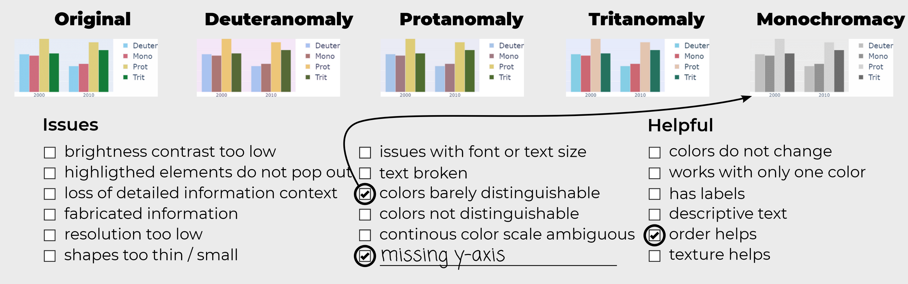

Accessibility for Color Vision Deficiencies: Challenges and Findings of a Large Scale Study on Paper Figures


Authors. Katrin Angerbauer, Nils Rodrigues, Rene Cutura, Seyda Öney, Nelusa Pathmanathan, Cristina Morariu, Daniel Weiskopf, Michael Sedlmair
Venue. CHI (2022) Full Paper
Type. Full Paper
Abstract. We present an exploratory study on the accessibility of images in publications when viewed with color vision deficiencies (CVDs). The study is based on 1,710 images sampled from a visualization dataset (VIS30K) over five years. We simulated four CVDs on each image. First, four researchers (one with a CVD) identified existing issues and helpful aspects in a subset of the images. Based on the resulting labels, 200 crowdworkers provided 30,000 ratings on present CVD issues in the simulated images. We analyzed this data for correlations, clusters, trends, and free text comments to gain a first overview of paper figure accessibility. Overall, about 60 % of the images were rated accessible. Furthermore, our study indicates that accessibility issues are subjective and hard to detect. On a meta-level, we reflect on our study experience to point out challenges and opportunities of large-scale accessibility studies for future research directions.
Acknowledgements. Funded by the Deutsche Forschungsgemeinschaft (DFG, German Research Foundation) – Project-ID 251654672 – TRR 161 (projects A08 and B01). We thank all our study participants and in particular Sajid Baloch for his valuable input.